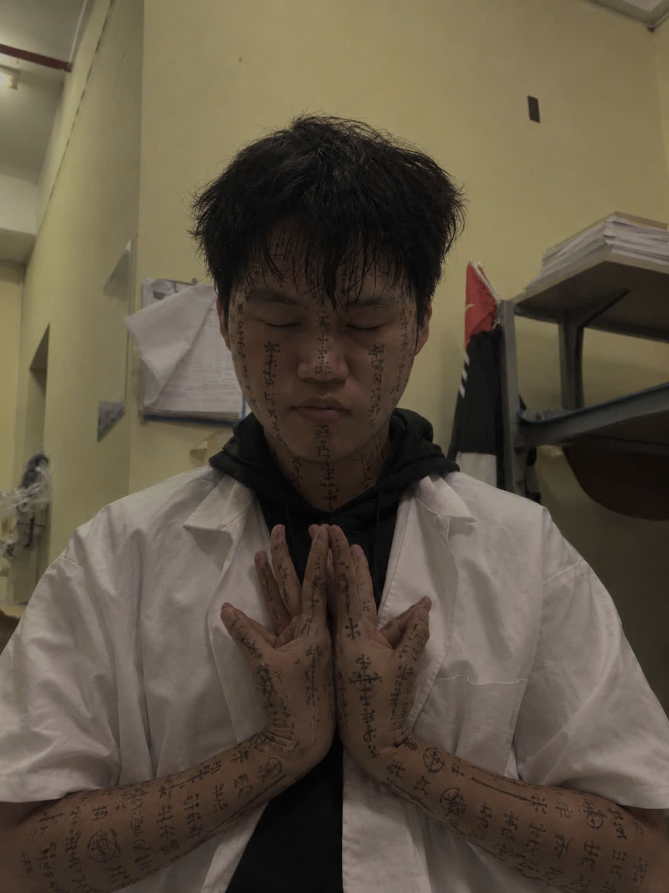

HELLO, I'M
Nhật
Thanh.
Một người trẻ đang học cách hiểu thế giới, hiểu bản thân và từng bước tạo nên con đường của riêng mình.
01 / 03SCROLL TO EXPLORE ↓

A FRAME OF ME · 2026CURIOUS MIND — OPEN HEART
STAY
CURIOUS✳
CURIOUS✳
Hiện tại, tôi là sinh viên năm hai ngành Thông tin – Thư viện. Tôi thích quan sát, sáng tạo và tìm thấy những câu chuyện thú vị trong những điều bình thường.
01—03Who
am I?
Một chút về hành trình học tập, suy nghĩ và những điều tôi đang theo đuổi.
↗ 02 / INTERESTSThings
I love.
Phim ảnh, thiết kế, những ý tưởng mới và niềm vui khi được tự tay tạo ra điều gì đó.
↗
“
Không cần phải biết hết mọi thứ ngay từ đầu. Chỉ cần luôn giữ cho mình sự tò mò.A NOTE TO MYSELF